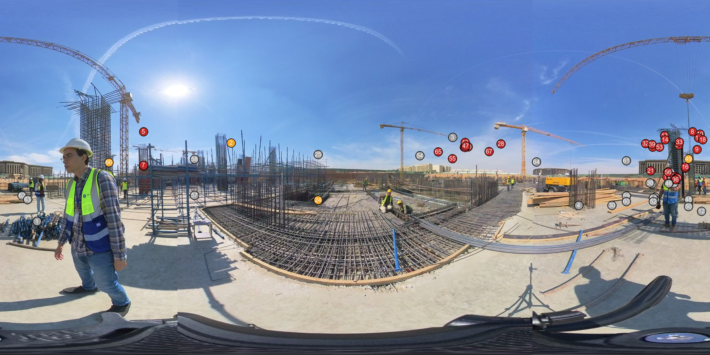
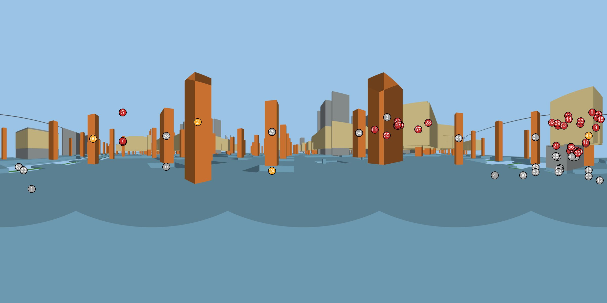
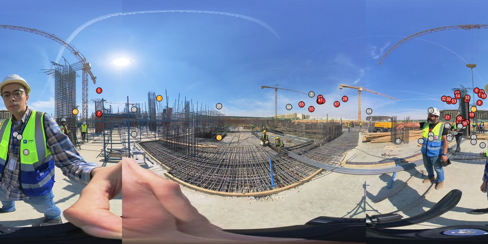

VID_20261031_122011_012 / t00000s
AI-estimated position (low confidence): an element may be one bay (about 6-8 m) off its marker. Markers are numbered; the table uses the same numbers.


| # | Element | Class | Discipline | Storey | Grid area | GUID | Dist. m | Status | Note | Also seen in |
|---|---|---|---|---|---|---|---|---|---|---|
| 2 | RC_Rectangular Columns:C(1000x1000)mm:618073 | IfcColumn | structure | HAC-SSL-FL2 | AFX.A-G/AFX.A-15 | 2Ip7HNHkH8QuUSM6MpN0cb | 5.0 | in progress | tall column rebar cage standing, no formwork or concrete | P01 P02 P03 P04 clip 010 t=0s clip 010 t=20s clip 010 t=30s clip 011 t=0s clip 011 t=14s clip 012 t=4s clip 018 t=60s |
| 5 | Basic Ceiling:DUMMY_CEILING_SIDE WALK:5535272 | IfcCovering | architecture | HAC-FFL-B2 | 17/C | 28nPXKW956gPEy4w0XWVgd | 6.4 | not started | architectural or slab-on-grade level: nothing built above the raft in this 360 | P01 P02 P03 clip 018 t=36s P04 P05 P06 P07 clip 010 t=0s clip 010 t=20s clip 010 t=30s clip 011 t=0s clip 011 t=14s clip 012 t=4s clip 018 t=0s clip 018 t=60s clip 019 t=0s |
| 6 | Floor:ABS-ARCH-FLOR-THICK SCREED_CSF-4 B02:3407162 | IfcSlab | architecture | HAC-FFL-B2 | 17/C | 2r$0QahBr7EhjklY0NS2DW | 6.4 | not started | architectural or slab-on-grade level: nothing built above the raft in this 360 | P01 P02 P03 clip 018 t=36s P04 P05 P06 P07 clip 010 t=0s clip 010 t=20s clip 010 t=30s clip 011 t=0s clip 011 t=14s clip 012 t=4s clip 018 t=0s clip 018 t=60s clip 019 t=0s |
| 7 | Floor:ABS-ARCH-FLOR-Epoxy Coating_EXP-01:3718454 | IfcSlab | architecture | HAC-FFL-B2 | 17/C | 0tCH0AsnrDWBdOEXejacs4 | 6.4 | not started | architectural or slab-on-grade level: nothing built above the raft in this 360 | P01 P02 P03 clip 018 t=36s P04 P05 P06 P07 clip 010 t=0s clip 010 t=20s clip 010 t=30s clip 011 t=0s clip 011 t=14s clip 012 t=4s clip 018 t=0s clip 018 t=60s clip 019 t=0s |
| 8 | RC_Rectangular Columns:C(150x200)mm:3123550 | IfcColumn | architecture | HAC-FFL-B2 | AFX.A-15/B | 3mHaH7KvP4qR3qoHGEEN0M | 6.4 | not started | architectural or slab-on-grade level: nothing built above the raft in this 360 | P03 P04 P05 clip 012 t=4s clip 018 t=0s |
| 9 | HAC_AAR_DOR_METL_MD01:MD01 (900X2200)mm:2003817 | IfcDoor | architecture | HAC-FFL-B2 | AFX.A-15/B | 3WyriqGCf7Y8Q0cRfEJ7Z4 | 7.0 | not started | architectural or slab-on-grade level: nothing built above the raft in this 360 | P03 P04 P05 P06 clip 012 t=4s clip 018 t=0s |
| 10 | Basic Wall:ABS-ARCH-WALL-Paint with plaster_PT-01:4698168 | IfcWall | architecture | HAC-FFL-U2B2 | AFX.A-15/B | 1hmVjhjOT9ZgzUjVKBxU_1 | 7.1 | not started | architectural or slab-on-grade level: nothing built above the raft in this 360 | P03 P04 P05 P06 clip 012 t=4s clip 018 t=0s |
| 11 | Basic Wall:HAC_A_WALL_BW_W01_150mm:1727239 | IfcWall | architecture | HAC-FFL-B2 | AFX.A-15/B | 0Y5ylc7Ln1jOaKGTZDhHT6 | 7.2 | not started | architectural or slab-on-grade level: nothing built above the raft in this 360 | P03 P04 P05 P06 clip 012 t=4s clip 018 t=0s |
| 13 | Basic Wall:ABS-ARCH-WALL-Paint with plaster_PT-01:4698167 | IfcWall | architecture | HAC-FFL-U2B2 | 16/B | 1hmVjhjOT9ZgzUjVKBxU$$ | 7.4 | not started | architectural or slab-on-grade level: nothing built above the raft in this 360 | P03 P04 P05 clip 012 t=4s clip 018 t=0s |
| 14 | Basic Wall:HAC_A_WALL_BW_W01_150mm:1727200 | IfcWall | architecture | HAC-FFL-B2 | 16/B | 0Y5ylc7Ln1jOaKGTZDhHQX | 7.5 | not started | architectural or slab-on-grade level: nothing built above the raft in this 360 | P03 P04 P05 clip 012 t=4s clip 018 t=0s |
| 15 | Floor:ABS-ARCH-FLOR-THICK SCREED_CSF-4 B02:3717757 | IfcSlab | architecture | HAC-FFL-B2 | B/16 | 0tCH0AsnrDWBdOEXejachF | 7.6 | not started | architectural or slab-on-grade level: nothing built above the raft in this 360 | P03 P04 P05 clip 012 t=4s clip 018 t=0s |
| 16 | Floor:ABS-ARCH-FLOR-Epoxy Coating_EXP-01:3717781 | IfcSlab | architecture | HAC-FFL-B2 | B/16 | 0tCH0AsnrDWBdOEXejaced | 7.6 | not started | architectural or slab-on-grade level: nothing built above the raft in this 360 | P03 P04 P05 clip 012 t=4s clip 018 t=0s |
| 17 | HAM-ME-RND_OPENING:HAM-ME-RND_OPENING:5652093 | IfcBuildingElementProxy | structure | HAC-SSL-SG | 16/B | 06bxfJIi55avURaUOf2fFZ | 7.6 | not started | architectural or slab-on-grade level: nothing built above the raft in this 360 | P03 P04 P05 clip 012 t=4s clip 018 t=0s |
| 18 | RC_Rectangular Columns:C(150x200)mm:3123551 | IfcColumn | architecture | HAC-FFL-B2 | AFX.A-15/B | 3mHaH7KvP4qR3qoHGEEN0N | 7.9 | not started | architectural or slab-on-grade level: nothing built above the raft in this 360 | P03 P04 P05 P06 clip 012 t=4s clip 018 t=0s |
| 20 | HAM-ME-RND_OPENING:HAM-ME-RND_OPENING:5652092 | IfcBuildingElementProxy | structure | HAC-SSL-SG | B/16 | 06bxfJIi55avURaUOf2fFY | 8.0 | not started | architectural or slab-on-grade level: nothing built above the raft in this 360 | P03 P04 P05 clip 012 t=4s clip 018 t=0s |
| 21 | Floor:150 mm THK.:3299634:2 | IfcSlab | structure | HAC-SSL-SG | 16/B | 3uHJBUZxGFBYpG1ilT6c5O | 8.2 | not started | architectural or slab-on-grade level: nothing built above the raft in this 360 | P03 P04 P05 clip 012 t=4s clip 018 t=0s |
| 23 | HAM-ME-RND_OPENING:HAM-ME-RND_OPENING:5652094 | IfcBuildingElementProxy | structure | HAC-SSL-SG | B/16 | 06bxfJIi55avURaUOf2fFW | 8.3 | not started | architectural or slab-on-grade level: nothing built above the raft in this 360 | P03 P04 P05 clip 012 t=4s clip 018 t=0s |
| 24 | Foundation Slab:1000mm THK Foundation Slab:584432:32 | IfcSlab | structure | HAC-SSL-FL2 | AFX.A-I/AFX.A-15 | 1$3u4fKb$q2$ZHMduvNxVd | 8.4 | in progress | raft rebar mat tied in the pit | P03 P05 clip 012 t=4s clip 018 t=0s |
| 26 | HAM-ME-RND_OPENING:HAM-ME-RND_OPENING:5652029 | IfcBuildingElementProxy | structure | HAC-SSL-SG | B/16 | 06bxfJIi55avURaUOf2fEZ | 8.5 | not started | architectural or slab-on-grade level: nothing built above the raft in this 360 | P03 P04 P05 clip 012 t=4s clip 018 t=0s |
| 27 | HAM-ME-RND_OPENING:HAM-ME-RND_OPENING:5652028 | IfcBuildingElementProxy | structure | HAC-SSL-SG | B/16 | 06bxfJIi55avURaUOf2fEY | 8.6 | not started | architectural or slab-on-grade level: nothing built above the raft in this 360 | P03 P04 P05 clip 012 t=4s clip 018 t=0s |
| 28 | RC_Rectangular Columns:C(200x200)mm:3123578 | IfcColumn | architecture | HAC-FFL-B2 | C/15 | 3mHaH7KvP4qR3qoHGEEN0o | 8.6 | not started | architectural or slab-on-grade level: nothing built above the raft in this 360 | P03 P04 clip 012 t=4s |
| 29 | HAM-ME-RND_OPENING:HAM-ME-RND_OPENING:5652027 | IfcBuildingElementProxy | structure | HAC-SSL-SG | B/16 | 06bxfJIi55avURaUOf2fEb | 8.7 | not started | architectural or slab-on-grade level: nothing built above the raft in this 360 | P03 P04 P05 clip 012 t=4s clip 018 t=0s |
| 31 | Basic Wall:HAC_A_WALL_BW_W01_150mm:1727109 | IfcWall | architecture | HAC-FFL-B2 | B/16 | 0Y5ylc7Ln1jOaKGTZDhHR4 | 8.8 | not started | architectural or slab-on-grade level: nothing built above the raft in this 360 | P03 P04 P05 clip 012 t=4s clip 018 t=0s |
| 32 | RC_Rectangular Columns:C(150x200)mm:3123429 | IfcColumn | architecture | HAC-FFL-B2 | 16/B | 3mHaH7KvP4qR3qoHGEEN6j | 8.9 | not started | architectural or slab-on-grade level: nothing built above the raft in this 360 | P03 P04 P05 clip 012 t=4s clip 018 t=0s |
| 33 | Basic Wall:ABS-ARCH-WALL-Paint with plaster_PT-01:4699064 | IfcWall | architecture | HAC-FFL-U2B2 | B/16 | 3m7IKZBJLCpei0OiPXaN9o | 8.9 | not started | architectural or slab-on-grade level: nothing built above the raft in this 360 | P03 P04 P05 clip 012 t=4s clip 018 t=0s |
| 36 | HAM-ME-RND_OPENING:HAM-ME-RND_OPENING:5651956 | IfcBuildingElementProxy | structure | HAC-SSL-SG | B/16 | 06bxfJIi55avURaUOf2f1g | 9.4 | not started | architectural or slab-on-grade level: nothing built above the raft in this 360 | P03 P04 P05 clip 012 t=4s clip 018 t=0s |
| 37 | Basic Wall:HAC_A_WALL_BW_W01_150mm:1727149 | IfcWall | architecture | HAC-FFL-B2 | 16/B | 0Y5ylc7Ln1jOaKGTZDhHRi | 9.5 | not started | architectural or slab-on-grade level: nothing built above the raft in this 360 | P03 P04 P05 clip 012 t=4s clip 018 t=0s |
| 39 | Basic Wall:ABS-ARCH-WALL-Paint with plaster_PT-01:4698166 | IfcWall | architecture | HAC-FFL-U2B2 | 16/B | 1hmVjhjOT9ZgzUjVKBxUWs | 9.5 | not started | architectural or slab-on-grade level: nothing built above the raft in this 360 | P03 P04 P05 clip 012 t=4s clip 018 t=0s |
| 40 | RC_Rectangular Columns:C(200x200)mm:3058723 | IfcColumn | architecture | HAC-FFL-B2 | AFX.A-G/15 | 2pdPUupQn7BgkLofE3Kew8 | 9.6 | not started | architectural or slab-on-grade level: nothing built above the raft in this 360 | P03 P04 clip 012 t=4s |
| 41 | Basic Wall:ABS-ARCH-WALL-Paint with plaster_PT-01:4776032 | IfcWall | architecture | HAC-FFL-B2 | AFX.A-G/15 | 3DhFPUgbH18gyx01gCCbIo | 9.6 | not started | architectural or slab-on-grade level: nothing built above the raft in this 360 | P03 P04 clip 012 t=4s |
| 42 | Floor:150 mm THK.:3299634 | IfcSlab | structure | HAC-SSL-SG | B/16 | 2lTSFCNjjEVeyWMZxLh9wv | 9.7 | not started | architectural or slab-on-grade level: nothing built above the raft in this 360 | P03 P04 P05 clip 012 t=4s clip 018 t=0s |
| 43 | M_Concrete-Rectangular Beam lintel :Bond Beam 200*400 mm:3155384 | IfcBeam | architecture | HAC-FFL-U2B2 | AFX.A-G/15 | 2_MuvtsaLDhOKpmRWrjG6W | 9.7 | not started | architectural or slab-on-grade level: nothing built above the raft in this 360 | P03 P04 clip 012 t=4s |
| 44 | Basic Wall:HAC_A_WALL_BW_W02_200mm:1708372 | IfcWall | architecture | HAC-FFL-B2 | AFX.A-G/15 | 01AyYa$nzFxuA2ijPV6nTK | 9.7 | not started | architectural or slab-on-grade level: nothing built above the raft in this 360 | P03 P04 clip 012 t=4s |
| 45 | HAM-ME-RND_OPENING:HAM-ME-RND_OPENING:5651955 | IfcBuildingElementProxy | structure | HAC-SSL-SG | B/16 | 06bxfJIi55avURaUOf2f1j | 9.7 | not started | architectural or slab-on-grade level: nothing built above the raft in this 360 | P03 P04 P05 clip 012 t=4s clip 018 t=0s |
| 47 | Basic Wall:ABS-ARCH-WALL-Paint with plaster_PT-01:3516098 | IfcWall | architecture | HAC-FFL-B2 | AFX.A-G/15 | 1OamUyK_P7987z59NRCMzj | 9.8 | not started | architectural or slab-on-grade level: nothing built above the raft in this 360 | P03 P04 clip 012 t=4s |
| 49 | RC_Rectangular Columns:C(1000x1000)mm:615940 | IfcColumn | structure | HAC-SSL-FL2 | B/AFX.A-15 | 3061ju5N94YvDiTWXiyN7r | 9.8 | in progress | tall column rebar cage standing, no formwork or concrete | clip 012 t=4s |
| 53 | RC_Rectangular Columns:C(150x200)mm:3123506 | IfcColumn | architecture | HAC-FFL-B2 | B/16 | 3mHaH7KvP4qR3qoHGEEN1w | 10.1 | not started | architectural or slab-on-grade level: nothing built above the raft in this 360 | P03 P04 P05 clip 012 t=4s |
| 55 | HAC_AAR_DOR_METL_MD03:MD03 (2000X2200)mm:1963136 | IfcDoor | architecture | HAC-FFL-B2 | 15/AFX.A-I | 2eXGO8_nDBneVywKcBRIcl | 10.5 | not started | architectural or slab-on-grade level: nothing built above the raft in this 360 | P03 P04 clip 012 t=4s |
| 56 | Floor:150 mm THK.:1466888 | IfcSlab | structure | HAC-SSL-SG | B/16 | 2aiUILnHv4$h0UpsR0yb6R | 10.5 | not started | architectural or slab-on-grade level: nothing built above the raft in this 360 | P03 P04 P05 clip 012 t=4s |
| 65 | RC_Rectangular Columns:C(200x200)mm:3123660 | IfcColumn | architecture | HAC-FFL-B2 | AFX.A-I/15 | 3mHaH7KvP4qR3qoHGEEN24 | 11.5 | not started | architectural or slab-on-grade level: nothing built above the raft in this 360 | P03 P04 clip 012 t=4s |
| 66 | RC_Rectangular Columns:C(1000x1000)mm:618731 | IfcColumn | structure | HAC-SSL-FL2 | AFX.A-16/C | 2Ip7HNHkH8QuUSM6MpN1SN | 11.9 | in progress | tall column rebar cage standing, no formwork or concrete | P05 P06 P07 clip 012 t=4s |
| 67 | Basic Wall:ABS-ARCH-WALL-Paint with plaster_PT-01:3990186 | IfcWall | architecture | HAC-FFL-B2 | AFX.A-G/15 | 2M2BzE8Gr8391lHzttz1sM | 12.0 | not started | architectural or slab-on-grade level: nothing built above the raft in this 360 | P03 P04 clip 012 t=4s |
Not visible from here (25)
- 1. IfcBeam · RC_Rectangular Beams:GB1(400X1200):645800 · 34M8DLIf5DehrtLoKQzAQ1
- 3. IfcColumn · RC_Rectangular Columns:C(1000x2100)mm:617999 · 2Ip7HNHkH8QuUSM6MpN0dp
- 4. IfcBeam · RC_Rectangular Beams:GB1(400X1200):645766 · 34M8DLIf5DehrtLoKQzAQl
- 12. IfcBeam · RC_Rectangular Beams:PC 50mm:995007 · 2VG9KaZu15AgEfkEGgH2IL
- 19. IfcWall · Basic Wall:250 mm THK.:1524015 · 09BFhyc55A3O2xe3Z9SLJ9
- 22. IfcWall · Basic Wall:250 mm THK.:1524016 · 09BFhyc55A3O2xe3Z9SLJA
- 25. IfcColumn · RC_Rectangular Columns:C(1000x1000)mm:618141 · 2Ip7HNHkH8QuUSM6MpN0bX
- 30. IfcBeam · RC_Rectangular Beams:PC 50mm:995006 · 2VG9KaZu15AgEfkEGgH2IK
- 34. IfcSlab · Foundation Slab:250mm THK Foundation Slab:1536117 · 0fh2eoMWvFAAKQGykg5Cz_
- 35. IfcSlab · Foundation Slab:100mm THK Foundation Slab:1536128 · 0fh2eoMWvFAAKQGykg5C$I
- 38. IfcWall · Basic Wall:250 mm THK.:1524014 · 09BFhyc55A3O2xe3Z9SLJ8
- 46. IfcWall · Basic Wall:250 mm THK.:1524013 · 09BFhyc55A3O2xe3Z9SLJF
- 48. IfcSlab · RC_Rectangular Footings:F05:602990 · 3ERnecAkP14hz4_JSu2UQY
- 50. IfcSlab · PC_Rectangular Footings:F05:3542646 · 3QmMXbvc12ffuH1sf6nW5X
- 51. IfcBeam · RC_Rectangular Beams:GB(300X800):1090605 · 17a3okn8b7VQEMq0ACB4PZ
- 52. IfcBeam · RC_Rectangular Beams:PC 50mm:1911787 · 1ZZNFz58nDT8eHj_z9weir
- 54. IfcColumn · RC_Rectangular Columns:C(1000x1000)mm:617569 · 0peOqM_4HED83aaql3O1wn
- 57. IfcSlab · Foundation Slab:1000mm THK Foundation Slab:584432:40 · 0_KmFx3qttKdfqFN3hsh6n
- 58. IfcColumn · RC_Rectangular Columns:C(1000x2100)mm:618474 · 2Ip7HNHkH8QuUSM6MpN0WM
- 59. IfcSlab · RC_Rectangular Footings:F02:603148 · 3ERnecAkP14hz4_JSu2U70
- 60. IfcSlab · PC_Rectangular Footings:F02:576344 · 1zYNzWgODBL9V9cdOOWbrN
- 61. IfcColumn · RC_Rectangular Columns:C(800x800)mm:615965 · 3061ju5N94YvDiTWXiyN7i
- 62. IfcBeam · RC_Rectangular Beams:GB(300X800):645937 · 34M8DLIf5DehrtLoKQzASO
- 63. IfcBeam · RC_Rectangular Beams:PC 50mm:995569 · 2VG9KaZu15AgEfkEGgH3hR
- 64. IfcColumn · RC_Rectangular Columns:C(800x800)mm:616057 · 3061ju5N94YvDiTWXiyN68
Same spot elsewhere: clip 012 t=4s (0.0 m) P03 (2.7 m) P04 (4.1 m) clip 018 t=0s (6.0 m) P05 (6.2 m)
Final comment. Tall column cages standing without formwork or concrete, and a tied raft mat in the pit. Nothing is built above the raft. Judged together with t=4. Structure shown as not started is the slab-on-grade level above the raft.
VID_20261031_122011_012 / t00004s
AI-estimated position (low confidence): an element may be one bay (about 6-8 m) off its marker. Markers are numbered; the table uses the same numbers.

| # | Element | Class | Discipline | Storey | Grid area | GUID | Dist. m | Status | Note | Also seen in |
|---|---|---|---|---|---|---|---|---|---|---|
| 2 | RC_Rectangular Columns:C(1000x1000)mm:618073 | IfcColumn | structure | HAC-SSL-FL2 | AFX.A-G/AFX.A-15 | 2Ip7HNHkH8QuUSM6MpN0cb | 5.0 | in progress | tall column rebar cage standing, no formwork or concrete | P01 P02 P03 P04 clip 010 t=0s clip 010 t=20s clip 010 t=30s clip 011 t=0s clip 011 t=14s clip 012 t=0s clip 018 t=60s |
| 5 | Basic Ceiling:DUMMY_CEILING_SIDE WALK:5535272 | IfcCovering | architecture | HAC-FFL-B2 | 17/C | 28nPXKW956gPEy4w0XWVgd | 6.4 | not started | architectural or slab-on-grade level: nothing built above the raft in this 360 | P01 P02 P03 clip 018 t=36s P04 P05 P06 P07 clip 010 t=0s clip 010 t=20s clip 010 t=30s clip 011 t=0s clip 011 t=14s clip 012 t=0s clip 018 t=0s clip 018 t=60s clip 019 t=0s |
| 6 | Floor:ABS-ARCH-FLOR-THICK SCREED_CSF-4 B02:3407162 | IfcSlab | architecture | HAC-FFL-B2 | 17/C | 2r$0QahBr7EhjklY0NS2DW | 6.4 | not started | architectural or slab-on-grade level: nothing built above the raft in this 360 | P01 P02 P03 clip 018 t=36s P04 P05 P06 P07 clip 010 t=0s clip 010 t=20s clip 010 t=30s clip 011 t=0s clip 011 t=14s clip 012 t=0s clip 018 t=0s clip 018 t=60s clip 019 t=0s |
| 7 | Floor:ABS-ARCH-FLOR-Epoxy Coating_EXP-01:3718454 | IfcSlab | architecture | HAC-FFL-B2 | 17/C | 0tCH0AsnrDWBdOEXejacs4 | 6.4 | not started | architectural or slab-on-grade level: nothing built above the raft in this 360 | P01 P02 P03 clip 018 t=36s P04 P05 P06 P07 clip 010 t=0s clip 010 t=20s clip 010 t=30s clip 011 t=0s clip 011 t=14s clip 012 t=0s clip 018 t=0s clip 018 t=60s clip 019 t=0s |
| 8 | RC_Rectangular Columns:C(150x200)mm:3123550 | IfcColumn | architecture | HAC-FFL-B2 | AFX.A-15/B | 3mHaH7KvP4qR3qoHGEEN0M | 6.4 | not started | architectural or slab-on-grade level: nothing built above the raft in this 360 | P03 P04 P05 clip 012 t=0s clip 018 t=0s |
| 9 | HAC_AAR_DOR_METL_MD01:MD01 (900X2200)mm:2003817 | IfcDoor | architecture | HAC-FFL-B2 | AFX.A-15/B | 3WyriqGCf7Y8Q0cRfEJ7Z4 | 7.0 | not started | architectural or slab-on-grade level: nothing built above the raft in this 360 | P03 P04 P05 P06 clip 012 t=0s clip 018 t=0s |
| 10 | Basic Wall:ABS-ARCH-WALL-Paint with plaster_PT-01:4698168 | IfcWall | architecture | HAC-FFL-U2B2 | AFX.A-15/B | 1hmVjhjOT9ZgzUjVKBxU_1 | 7.1 | not started | architectural or slab-on-grade level: nothing built above the raft in this 360 | P03 P04 P05 P06 clip 012 t=0s clip 018 t=0s |
| 11 | Basic Wall:HAC_A_WALL_BW_W01_150mm:1727239 | IfcWall | architecture | HAC-FFL-B2 | AFX.A-15/B | 0Y5ylc7Ln1jOaKGTZDhHT6 | 7.2 | not started | architectural or slab-on-grade level: nothing built above the raft in this 360 | P03 P04 P05 P06 clip 012 t=0s clip 018 t=0s |
| 13 | Basic Wall:ABS-ARCH-WALL-Paint with plaster_PT-01:4698167 | IfcWall | architecture | HAC-FFL-U2B2 | 16/B | 1hmVjhjOT9ZgzUjVKBxU$$ | 7.4 | not started | architectural or slab-on-grade level: nothing built above the raft in this 360 | P03 P04 P05 clip 012 t=0s clip 018 t=0s |
| 14 | Basic Wall:HAC_A_WALL_BW_W01_150mm:1727200 | IfcWall | architecture | HAC-FFL-B2 | 16/B | 0Y5ylc7Ln1jOaKGTZDhHQX | 7.5 | not started | architectural or slab-on-grade level: nothing built above the raft in this 360 | P03 P04 P05 clip 012 t=0s clip 018 t=0s |
| 15 | Floor:ABS-ARCH-FLOR-THICK SCREED_CSF-4 B02:3717757 | IfcSlab | architecture | HAC-FFL-B2 | B/16 | 0tCH0AsnrDWBdOEXejachF | 7.6 | not started | architectural or slab-on-grade level: nothing built above the raft in this 360 | P03 P04 P05 clip 012 t=0s clip 018 t=0s |
| 16 | Floor:ABS-ARCH-FLOR-Epoxy Coating_EXP-01:3717781 | IfcSlab | architecture | HAC-FFL-B2 | B/16 | 0tCH0AsnrDWBdOEXejaced | 7.6 | not started | architectural or slab-on-grade level: nothing built above the raft in this 360 | P03 P04 P05 clip 012 t=0s clip 018 t=0s |
| 17 | HAM-ME-RND_OPENING:HAM-ME-RND_OPENING:5652093 | IfcBuildingElementProxy | structure | HAC-SSL-SG | 16/B | 06bxfJIi55avURaUOf2fFZ | 7.6 | not started | architectural or slab-on-grade level: nothing built above the raft in this 360 | P03 P04 P05 clip 012 t=0s clip 018 t=0s |
| 18 | RC_Rectangular Columns:C(150x200)mm:3123551 | IfcColumn | architecture | HAC-FFL-B2 | AFX.A-15/B | 3mHaH7KvP4qR3qoHGEEN0N | 7.9 | not started | architectural or slab-on-grade level: nothing built above the raft in this 360 | P03 P04 P05 P06 clip 012 t=0s clip 018 t=0s |
| 20 | HAM-ME-RND_OPENING:HAM-ME-RND_OPENING:5652092 | IfcBuildingElementProxy | structure | HAC-SSL-SG | B/16 | 06bxfJIi55avURaUOf2fFY | 8.0 | not started | architectural or slab-on-grade level: nothing built above the raft in this 360 | P03 P04 P05 clip 012 t=0s clip 018 t=0s |
| 21 | Floor:150 mm THK.:3299634:2 | IfcSlab | structure | HAC-SSL-SG | 16/B | 3uHJBUZxGFBYpG1ilT6c5O | 8.2 | not started | architectural or slab-on-grade level: nothing built above the raft in this 360 | P03 P04 P05 clip 012 t=0s clip 018 t=0s |
| 23 | HAM-ME-RND_OPENING:HAM-ME-RND_OPENING:5652094 | IfcBuildingElementProxy | structure | HAC-SSL-SG | B/16 | 06bxfJIi55avURaUOf2fFW | 8.3 | not started | architectural or slab-on-grade level: nothing built above the raft in this 360 | P03 P04 P05 clip 012 t=0s clip 018 t=0s |
| 24 | Foundation Slab:1000mm THK Foundation Slab:584432:32 | IfcSlab | structure | HAC-SSL-FL2 | AFX.A-I/AFX.A-15 | 1$3u4fKb$q2$ZHMduvNxVd | 8.4 | in progress | raft rebar mat tied in the pit | P03 P05 clip 012 t=0s clip 018 t=0s |
| 26 | HAM-ME-RND_OPENING:HAM-ME-RND_OPENING:5652029 | IfcBuildingElementProxy | structure | HAC-SSL-SG | B/16 | 06bxfJIi55avURaUOf2fEZ | 8.5 | not started | architectural or slab-on-grade level: nothing built above the raft in this 360 | P03 P04 P05 clip 012 t=0s clip 018 t=0s |
| 27 | HAM-ME-RND_OPENING:HAM-ME-RND_OPENING:5652028 | IfcBuildingElementProxy | structure | HAC-SSL-SG | B/16 | 06bxfJIi55avURaUOf2fEY | 8.6 | not started | architectural or slab-on-grade level: nothing built above the raft in this 360 | P03 P04 P05 clip 012 t=0s clip 018 t=0s |
| 28 | RC_Rectangular Columns:C(200x200)mm:3123578 | IfcColumn | architecture | HAC-FFL-B2 | C/15 | 3mHaH7KvP4qR3qoHGEEN0o | 8.6 | not started | architectural or slab-on-grade level: nothing built above the raft in this 360 | P03 P04 clip 012 t=0s |
| 29 | HAM-ME-RND_OPENING:HAM-ME-RND_OPENING:5652027 | IfcBuildingElementProxy | structure | HAC-SSL-SG | B/16 | 06bxfJIi55avURaUOf2fEb | 8.7 | not started | architectural or slab-on-grade level: nothing built above the raft in this 360 | P03 P04 P05 clip 012 t=0s clip 018 t=0s |
| 31 | Basic Wall:HAC_A_WALL_BW_W01_150mm:1727109 | IfcWall | architecture | HAC-FFL-B2 | B/16 | 0Y5ylc7Ln1jOaKGTZDhHR4 | 8.8 | not started | architectural or slab-on-grade level: nothing built above the raft in this 360 | P03 P04 P05 clip 012 t=0s clip 018 t=0s |
| 32 | RC_Rectangular Columns:C(150x200)mm:3123429 | IfcColumn | architecture | HAC-FFL-B2 | 16/B | 3mHaH7KvP4qR3qoHGEEN6j | 8.9 | not started | architectural or slab-on-grade level: nothing built above the raft in this 360 | P03 P04 P05 clip 012 t=0s clip 018 t=0s |
| 33 | Basic Wall:ABS-ARCH-WALL-Paint with plaster_PT-01:4699064 | IfcWall | architecture | HAC-FFL-U2B2 | B/16 | 3m7IKZBJLCpei0OiPXaN9o | 8.9 | not started | architectural or slab-on-grade level: nothing built above the raft in this 360 | P03 P04 P05 clip 012 t=0s clip 018 t=0s |
| 36 | HAM-ME-RND_OPENING:HAM-ME-RND_OPENING:5651956 | IfcBuildingElementProxy | structure | HAC-SSL-SG | B/16 | 06bxfJIi55avURaUOf2f1g | 9.4 | not started | architectural or slab-on-grade level: nothing built above the raft in this 360 | P03 P04 P05 clip 012 t=0s clip 018 t=0s |
| 37 | Basic Wall:HAC_A_WALL_BW_W01_150mm:1727149 | IfcWall | architecture | HAC-FFL-B2 | 16/B | 0Y5ylc7Ln1jOaKGTZDhHRi | 9.5 | not started | architectural or slab-on-grade level: nothing built above the raft in this 360 | P03 P04 P05 clip 012 t=0s clip 018 t=0s |
| 39 | Basic Wall:ABS-ARCH-WALL-Paint with plaster_PT-01:4698166 | IfcWall | architecture | HAC-FFL-U2B2 | 16/B | 1hmVjhjOT9ZgzUjVKBxUWs | 9.5 | not started | architectural or slab-on-grade level: nothing built above the raft in this 360 | P03 P04 P05 clip 012 t=0s clip 018 t=0s |
| 40 | RC_Rectangular Columns:C(200x200)mm:3058723 | IfcColumn | architecture | HAC-FFL-B2 | AFX.A-G/15 | 2pdPUupQn7BgkLofE3Kew8 | 9.6 | not started | architectural or slab-on-grade level: nothing built above the raft in this 360 | P03 P04 clip 012 t=0s |
| 41 | Basic Wall:ABS-ARCH-WALL-Paint with plaster_PT-01:4776032 | IfcWall | architecture | HAC-FFL-B2 | AFX.A-G/15 | 3DhFPUgbH18gyx01gCCbIo | 9.6 | not started | architectural or slab-on-grade level: nothing built above the raft in this 360 | P03 P04 clip 012 t=0s |
| 42 | Floor:150 mm THK.:3299634 | IfcSlab | structure | HAC-SSL-SG | B/16 | 2lTSFCNjjEVeyWMZxLh9wv | 9.7 | not started | architectural or slab-on-grade level: nothing built above the raft in this 360 | P03 P04 P05 clip 012 t=0s clip 018 t=0s |
| 43 | M_Concrete-Rectangular Beam lintel :Bond Beam 200*400 mm:3155384 | IfcBeam | architecture | HAC-FFL-U2B2 | AFX.A-G/15 | 2_MuvtsaLDhOKpmRWrjG6W | 9.7 | not started | architectural or slab-on-grade level: nothing built above the raft in this 360 | P03 P04 clip 012 t=0s |
| 44 | Basic Wall:HAC_A_WALL_BW_W02_200mm:1708372 | IfcWall | architecture | HAC-FFL-B2 | AFX.A-G/15 | 01AyYa$nzFxuA2ijPV6nTK | 9.7 | not started | architectural or slab-on-grade level: nothing built above the raft in this 360 | P03 P04 clip 012 t=0s |
| 45 | HAM-ME-RND_OPENING:HAM-ME-RND_OPENING:5651955 | IfcBuildingElementProxy | structure | HAC-SSL-SG | B/16 | 06bxfJIi55avURaUOf2f1j | 9.7 | not started | architectural or slab-on-grade level: nothing built above the raft in this 360 | P03 P04 P05 clip 012 t=0s clip 018 t=0s |
| 47 | Basic Wall:ABS-ARCH-WALL-Paint with plaster_PT-01:3516098 | IfcWall | architecture | HAC-FFL-B2 | AFX.A-G/15 | 1OamUyK_P7987z59NRCMzj | 9.8 | not started | architectural or slab-on-grade level: nothing built above the raft in this 360 | P03 P04 clip 012 t=0s |
| 49 | RC_Rectangular Columns:C(1000x1000)mm:615940 | IfcColumn | structure | HAC-SSL-FL2 | B/AFX.A-15 | 3061ju5N94YvDiTWXiyN7r | 9.8 | in progress | tall column rebar cage standing, no formwork or concrete | clip 012 t=0s |
| 53 | RC_Rectangular Columns:C(150x200)mm:3123506 | IfcColumn | architecture | HAC-FFL-B2 | B/16 | 3mHaH7KvP4qR3qoHGEEN1w | 10.1 | not started | architectural or slab-on-grade level: nothing built above the raft in this 360 | P03 P04 P05 clip 012 t=0s |
| 55 | HAC_AAR_DOR_METL_MD03:MD03 (2000X2200)mm:1963136 | IfcDoor | architecture | HAC-FFL-B2 | 15/AFX.A-I | 2eXGO8_nDBneVywKcBRIcl | 10.5 | not started | architectural or slab-on-grade level: nothing built above the raft in this 360 | P03 P04 clip 012 t=0s |
| 56 | Floor:150 mm THK.:1466888 | IfcSlab | structure | HAC-SSL-SG | B/16 | 2aiUILnHv4$h0UpsR0yb6R | 10.5 | not started | architectural or slab-on-grade level: nothing built above the raft in this 360 | P03 P04 P05 clip 012 t=0s |
| 65 | RC_Rectangular Columns:C(200x200)mm:3123660 | IfcColumn | architecture | HAC-FFL-B2 | AFX.A-I/15 | 3mHaH7KvP4qR3qoHGEEN24 | 11.5 | not started | architectural or slab-on-grade level: nothing built above the raft in this 360 | P03 P04 clip 012 t=0s |
| 66 | RC_Rectangular Columns:C(1000x1000)mm:618731 | IfcColumn | structure | HAC-SSL-FL2 | AFX.A-16/C | 2Ip7HNHkH8QuUSM6MpN1SN | 11.9 | in progress | tall column rebar cage standing, no formwork or concrete | P05 P06 P07 clip 012 t=0s |
| 67 | Basic Wall:ABS-ARCH-WALL-Paint with plaster_PT-01:3990186 | IfcWall | architecture | HAC-FFL-B2 | AFX.A-G/15 | 2M2BzE8Gr8391lHzttz1sM | 12.0 | not started | architectural or slab-on-grade level: nothing built above the raft in this 360 | P03 P04 clip 012 t=0s |
Not visible from here (25)
- 1. IfcBeam · RC_Rectangular Beams:GB1(400X1200):645800 · 34M8DLIf5DehrtLoKQzAQ1
- 3. IfcColumn · RC_Rectangular Columns:C(1000x2100)mm:617999 · 2Ip7HNHkH8QuUSM6MpN0dp
- 4. IfcBeam · RC_Rectangular Beams:GB1(400X1200):645766 · 34M8DLIf5DehrtLoKQzAQl
- 12. IfcBeam · RC_Rectangular Beams:PC 50mm:995007 · 2VG9KaZu15AgEfkEGgH2IL
- 19. IfcWall · Basic Wall:250 mm THK.:1524015 · 09BFhyc55A3O2xe3Z9SLJ9
- 22. IfcWall · Basic Wall:250 mm THK.:1524016 · 09BFhyc55A3O2xe3Z9SLJA
- 25. IfcColumn · RC_Rectangular Columns:C(1000x1000)mm:618141 · 2Ip7HNHkH8QuUSM6MpN0bX
- 30. IfcBeam · RC_Rectangular Beams:PC 50mm:995006 · 2VG9KaZu15AgEfkEGgH2IK
- 34. IfcSlab · Foundation Slab:250mm THK Foundation Slab:1536117 · 0fh2eoMWvFAAKQGykg5Cz_
- 35. IfcSlab · Foundation Slab:100mm THK Foundation Slab:1536128 · 0fh2eoMWvFAAKQGykg5C$I
- 38. IfcWall · Basic Wall:250 mm THK.:1524014 · 09BFhyc55A3O2xe3Z9SLJ8
- 46. IfcWall · Basic Wall:250 mm THK.:1524013 · 09BFhyc55A3O2xe3Z9SLJF
- 48. IfcSlab · RC_Rectangular Footings:F05:602990 · 3ERnecAkP14hz4_JSu2UQY
- 50. IfcSlab · PC_Rectangular Footings:F05:3542646 · 3QmMXbvc12ffuH1sf6nW5X
- 51. IfcBeam · RC_Rectangular Beams:GB(300X800):1090605 · 17a3okn8b7VQEMq0ACB4PZ
- 52. IfcBeam · RC_Rectangular Beams:PC 50mm:1911787 · 1ZZNFz58nDT8eHj_z9weir
- 54. IfcColumn · RC_Rectangular Columns:C(1000x1000)mm:617569 · 0peOqM_4HED83aaql3O1wn
- 57. IfcSlab · Foundation Slab:1000mm THK Foundation Slab:584432:40 · 0_KmFx3qttKdfqFN3hsh6n
- 58. IfcColumn · RC_Rectangular Columns:C(1000x2100)mm:618474 · 2Ip7HNHkH8QuUSM6MpN0WM
- 59. IfcSlab · RC_Rectangular Footings:F02:603148 · 3ERnecAkP14hz4_JSu2U70
- 60. IfcSlab · PC_Rectangular Footings:F02:576344 · 1zYNzWgODBL9V9cdOOWbrN
- 61. IfcColumn · RC_Rectangular Columns:C(800x800)mm:615965 · 3061ju5N94YvDiTWXiyN7i
- 62. IfcBeam · RC_Rectangular Beams:GB(300X800):645937 · 34M8DLIf5DehrtLoKQzASO
- 63. IfcBeam · RC_Rectangular Beams:PC 50mm:995569 · 2VG9KaZu15AgEfkEGgH3hR
- 64. IfcColumn · RC_Rectangular Columns:C(800x800)mm:616057 · 3061ju5N94YvDiTWXiyN68
Same spot elsewhere: clip 012 t=0s (0.0 m) P03 (2.7 m) P04 (4.1 m) clip 018 t=0s (6.0 m) P05 (6.2 m)
Final comment. Same view as t=0 (judged together), so the same elements and statuses apply: tall cages, tied raft mat, nothing above the raft. Structure shown as not started is the slab-on-grade level above the raft.